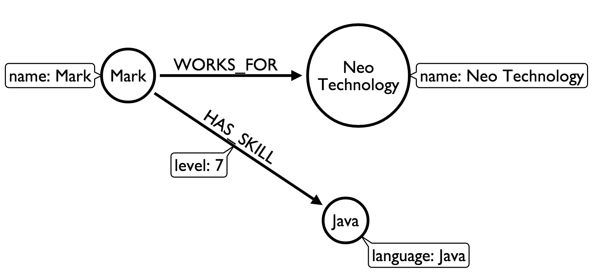

Data Modelling Guide
prose that explains the goals of this guide
prose and links to prerequisites also target audience
Overview
- Application/End User Goals
- Questions to ask of the domain
- Identity entities
- Identity relationships
- Further resources
This guide will show you how to design a graph model and you can then apply the lessons to your own data set. We’ll be following Ian Robinson’s Design for Queryability modeling approach.
The creation of a graph model should be treated as an iterative process - we don’t need to come up with the perfect model on our first try.
Application/End User Goals
Designing a graph model fits easily into an agile development approach and we’d typically start with agile stories.
For example if we’re building an application that will recommend colleagues we should work with then we might start out with the following story:
As an employee
I want to know who in the company has similar skills to me
So that we can exchange knowledge
Questions to ask of the domain
We can restructure that into the following question:
Which people, who work for the same company as me, have similar skills to me?
Now that we’ve got our first question we can come up with a model based on that.
Identity entities
The first thing we need to do is identify entities or nouns. These will become the nodes in our model. e.g.
Which people, who work for the same company as me, have similar skills to me?
person
company
skill
Identity relationships
The next step is to pull out the relationships between those entities which we can do by pulling out the verbs:
Which people, who work for the same company as me, have similar skills to me?
person WORKS_FOR company
person HAS_SKILL skill
During this process it’s helpful to have a whiteboard handy where you can easily collaborate with colleagues on the model. Using actual data rather than the type names tends to make things easier to grasp.
e.g. our model with actual data would look like this

As we come up with new questions and associated queries we can repeat this process keeping in mind that we only need to create a model to answer our questions - we don’t need to model everything.
This is a very simple example of a graph model which is merely intended to explain the process of coming up with one.
Further resources
The following resources contain examples of models that others have come up with to answer the questions they had of their data: